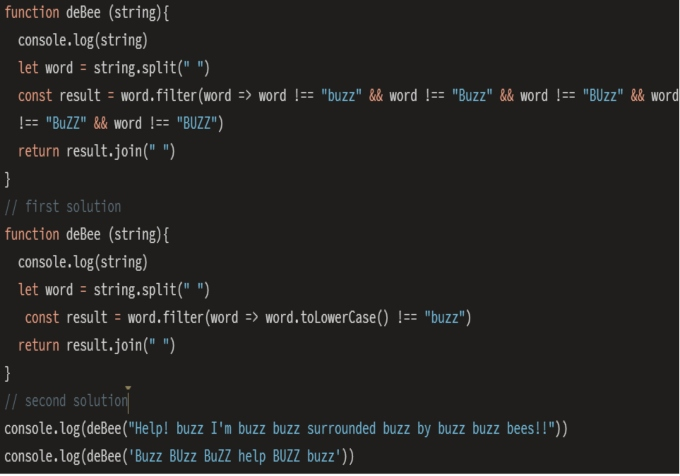

Problem Solving
Think like a programmer! Problem solving is a very important skill as a programmer because they need to think and develop more effective ways for problem solving.
Block on a simple problem
During week 4 on foundation, I have some trouble solving the JavaScript Kata Built-in Method deBee problem. At the beginning, I didn't understand what the problem was asking and I didn't understand what the function parameter value was. The first problem solving technique is to try to write random code so I can read the error messages. Once I understood the error messages, I realized I can use the console.log method to find out function parameter value. Finally I understand the problem is wanting to remove the word “buzz” from the sentences and I was able to solve it with some googling. During this process, I feel like JavaScript problems are like puzzles. We really need to understand all the pieces so toward the end we can connect and solve the problems. I learned about how to use console.logging and trying something by solving this problem.
Elegantly solved problem
I have a new problem after I solve the deBee which is my code. I feel like my code is too long and repeats itself too much. I use google to find a better method to solve this problem (using the “toLowerCase()”). During the process, I felt quite challenged to solve it and learned about the importance of tidy and keeping short code.
Problem solving techniques:
Pseudocode
I am trying to improve myself on this technique by starting to write some pseudocode before I start writing the code.
Trying something
Use this method a lot in JavaScript Kata. I always try to write some code on it to check whether my code is right or wrong.
Rubber ducky method
I tried to use this method. I found it quite useful because it allows me to explain what the problem is.
Reading error messages
I am quite confident with reading error messages because it always shows where the error is and what is happening.
Console.logging
Use this technique a lot to console log my code to see whether it is working.
Googling
One of my favorite methods. I use google a lot. On Stack Overflow and youtube.
Asking your peers for help
Don’t really use this method yet because now everything is online. I find it hard to explain my problems in chat messages. I much prefer face to face when asking the question.
Asking coaches for help
Don’t really use this method yet because now everything is online. I find it hard to explain my problems in chat messages. I much prefer face to face when asking the question.
Improving your process with reflection
I try to improve this method by giving myself more time for reflection because sometimes I always feel like I'm rushing everything at a fast pace.